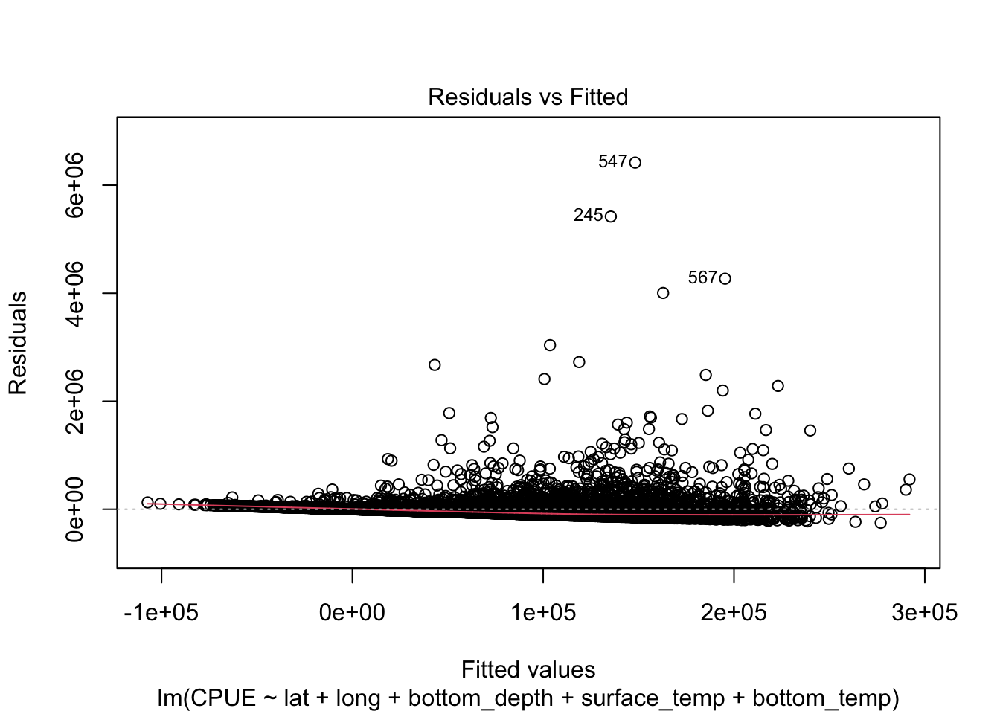
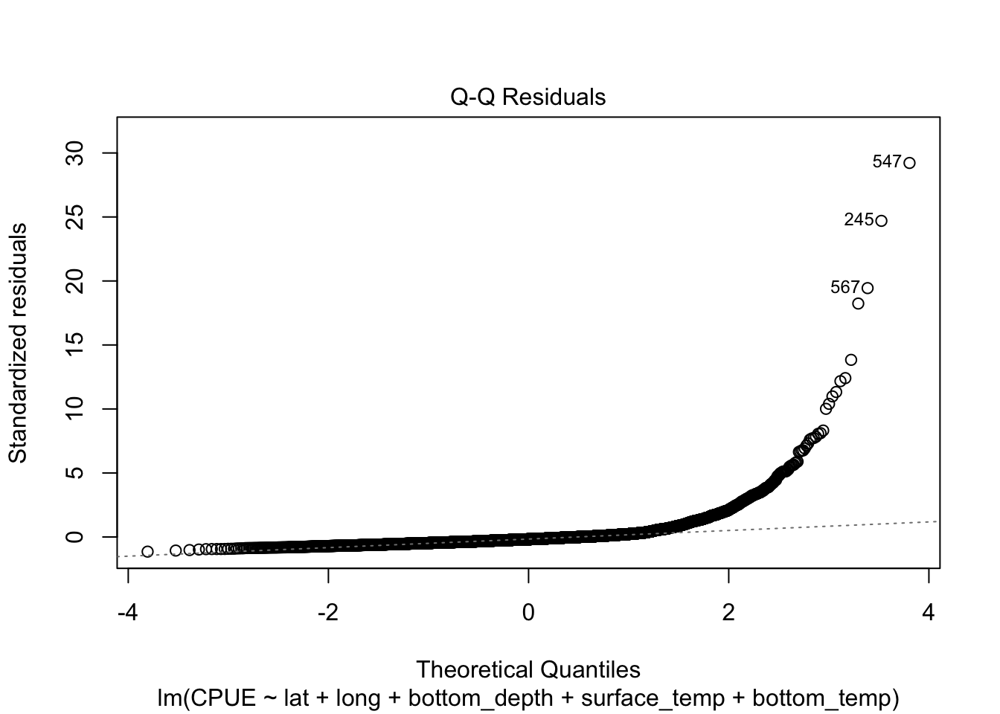

snowcrab_raw <-read.csv("data/mfsnowcrab.csv")# Clean datasnowcrab <- snowcrab_raw %>% dplyr::select(-1, -5) %>%# Dropping specific index columnsmutate(sex =as.factor(sex))# Inspect data integritycolSums(is.na(snowcrab))
latitude longitude year sex
0 0 0 0
bottom_depth surface_temperature bottom_temperature haul
0 0 0 0
cpue
0
summary(snowcrab)
latitude longitude year sex
Min. :54.67 Min. :-178.2 Min. :1975 female: 7516
1st Qu.:57.17 1st Qu.:-173.6 1st Qu.:1988 male :10411
Median :58.34 Median :-170.9 Median :1998
Mean :58.53 Mean :-170.7 Mean :1998
3rd Qu.:59.99 3rd Qu.:-167.9 3rd Qu.:2008
Max. :62.04 Max. :-158.4 Max. :2018
bottom_depth surface_temperature bottom_temperature haul
Min. : 22.00 Min. :-1.100 Min. :-2.100 Min. : 1.0
1st Qu.: 68.00 1st Qu.: 5.900 1st Qu.: 0.600 1st Qu.: 86.0
Median : 84.00 Median : 7.300 Median : 2.000 Median :127.0
Mean : 90.01 Mean : 7.124 Mean : 1.802 Mean :123.8
3rd Qu.:110.00 3rd Qu.: 8.600 3rd Qu.: 3.200 3rd Qu.:164.0
Max. :276.00 Max. :14.100 Max. :10.000 Max. :334.0
cpue
Min. : 52
1st Qu.: 483
Median : 3215
Mean : 32876
3rd Qu.: 21008
Max. :5117962
Create Total Success Metric (Haul Aggregation)
# Safely aggregate all physical factors by Year and Haul simultaneouslyhaul_df <- snowcrab_raw %>%group_by(year, haul) %>%summarize(CPUE =sum(cpue, na.rm =TRUE),lat =mean(latitude, na.rm =TRUE),long =mean(longitude, na.rm =TRUE),bottom_depth =mean(bottom_depth, na.rm =TRUE),surface_temp =mean(surface_temperature, na.rm =TRUE),bottom_temp =mean(bottom_temperature, na.rm =TRUE),.groups ="drop" ) %>%mutate(Haul_ID =row_number()) %>% dplyr::select(Haul_ID, Year = year, Haul_Num = haul, CPUE, lat, long, bottom_depth, surface_temp, bottom_temp)
Regression Models
# Initial baseline modelq1.model <-lm(CPUE ~ lat + long + bottom_depth + surface_temp + bottom_temp, data = haul_df)summary(q1.model)
Call:
lm(formula = CPUE ~ lat + long + bottom_depth + surface_temp +
bottom_temp, data = haul_df)
Residuals:
Min 1Q Median 3Q Max
-251319 -85165 -39076 13939 6418240
Coefficients:
Estimate Std. Error t value Pr(>|t|)
(Intercept) -1640786.3 147085.9 -11.155 < 2e-16 ***
lat 13943.7 4014.0 3.474 0.000516 ***
long -5424.8 1739.4 -3.119 0.001823 **
bottom_depth -1092.7 165.5 -6.602 4.36e-11 ***
surface_temp 15694.3 1677.2 9.357 < 2e-16 ***
bottom_temp -11563.5 2144.9 -5.391 7.23e-08 ***
---
Signif. codes: 0 '***' 0.001 '**' 0.01 '*' 0.05 '.' 0.1 ' ' 1
Residual standard error: 219700 on 7087 degrees of freedom
Multiple R-squared: 0.07671, Adjusted R-squared: 0.07606
F-statistic: 117.8 on 5 and 7087 DF, p-value: < 2.2e-16
plot(q1.model, which =1:2) # Specific diagnostic plots (Residuals vs Fitted, Q-Q)


# Refined model with log transformation and quadratic termsq1.model2 <-lm(log(CPUE +1) ~ lat + long + bottom_temp + surface_temp + bottom_depth +I(bottom_depth^2), data = haul_df)summary(q1.model2)
Call:
lm(formula = log(CPUE + 1) ~ lat + long + bottom_temp + surface_temp +
bottom_depth + I(bottom_depth^2), data = haul_df)
Residuals:
Min 1Q Median 3Q Max
-6.3345 -1.3384 -0.0365 1.2982 9.2580
Coefficients:
Estimate Std. Error t value Pr(>|t|)
(Intercept) -4.609e+01 1.380e+00 -33.402 < 2e-16 ***
lat -8.656e-02 3.811e-02 -2.271 0.0232 *
long -3.381e-01 1.584e-02 -21.351 < 2e-16 ***
bottom_temp -3.308e-01 2.026e-02 -16.325 < 2e-16 ***
surface_temp 1.236e-01 1.554e-02 7.954 2.09e-15 ***
bottom_depth 8.969e-02 6.086e-03 14.736 < 2e-16 ***
I(bottom_depth^2) -6.249e-04 2.894e-05 -21.592 < 2e-16 ***
---
Signif. codes: 0 '***' 0.001 '**' 0.01 '*' 0.05 '.' 0.1 ' ' 1
Residual standard error: 1.95 on 7086 degrees of freedom
Multiple R-squared: 0.3958, Adjusted R-squared: 0.3953
F-statistic: 773.7 on 6 and 7086 DF, p-value: < 2.2e-16